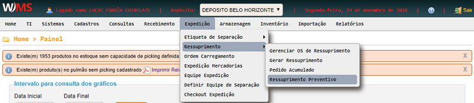
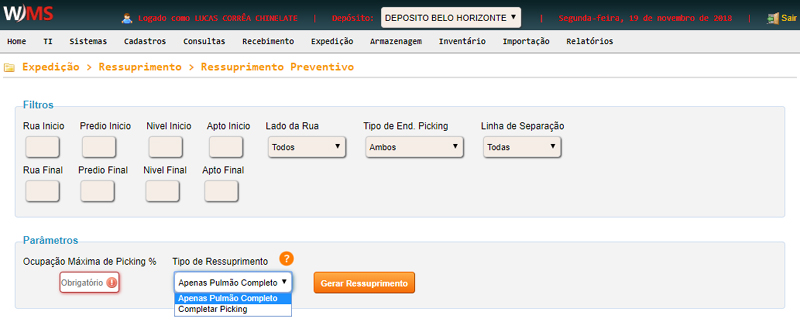
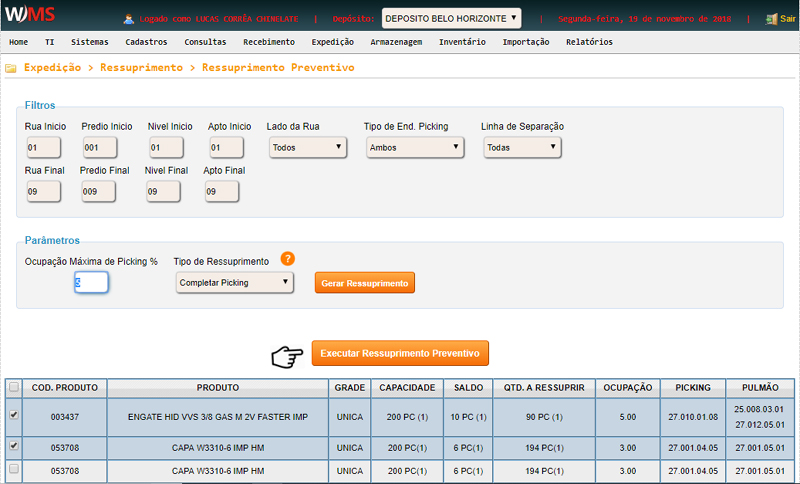

Expedição -> Ressuprimento -> Ressuprimento preventivo
Clique no menu EXPEDIÇÃO, posicione o mouse em RESSUPRIMENTO,
em seguida clique em RESSUPRIMENTO PREVENTIVO .

Na tela seguinte, preencha os campos de filtro, em seguida defina os seguintes parâmetros:
- Ocupação máxima de picking %: informe a porcentagem de ocupação máxima
do picking para ressuprimento. O sistema irá incluir na listagem de abastecimento todos os itens
que estiverem abaixo deste percentual de ocupação.
Exemplo: Se o usuário definir 30% o sistema irá filtrar todos os endereços de
picking que atendam aos filtros selecionados e que estejam com quantidade em estoque no picking
abaixo de 30% da capacidade do picking.
- Tipo de ressuprimento:
- Apenas pulmão completo: o sistema deverá fazer o abastecimento para o
picking apenas se todo o estoque no endereço de pulmão for descer ou se atingir a quantidade
definida como norma de paletização.
- Completar picking: o sistema irá buscar a quantidade
complementar em outro endereço.
Após preencher os parâmetros, clique em GERAR RESSUPRIMENTO.

Na listagem exibida, selecione os produtos que deseja e clique em
EXECUTAR RESSUPRIMENTO PREVENTIVO.
